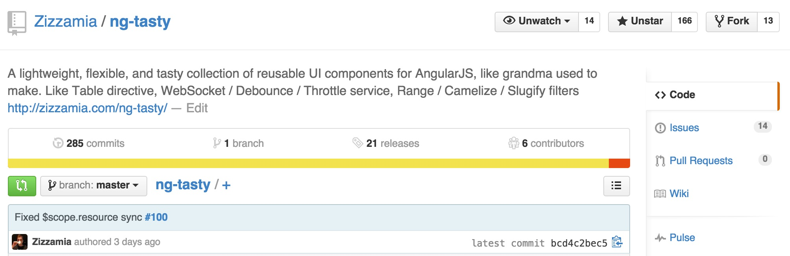

#ngTasty
Building high performance
measurable directives

@zizzamia
AngularJS at Twitter
#ngTasty
There were a few problems
Angular group at Twitter
#ngTasty should be
Benchpress
repeated manual work
to create a benchmark
How to create a benchmark
Enter this
npm install generator-benchpress
yo benchpress ng-tasty
You get this
create benchmarks/protractorBenchmarks.conf.js
create benchmarks/ng-tasty/index.html
create benchmarks/ng-tasty/benchmark.spec.jsRunning a basic benchmark
protractor benchmarks/protractorBenchmarks.conf.js --specs benchmarks/ng-tasty/benchmark.spec.js
Results of basic benchmark
gcAmount | gcAmountInScript | render | script
============== | ================ | ============ | ==============
268.20±154% | 0.00±NaN% | 9.63±16% | 1.53±18%ngTasty Simple Table
<div tasty-table bind-resource="resource" watch-resource="collection">
<table class="table table-striped table-condensed">
<thead tasty-thead></thead>
<tbody>
<tr ng-repeat="row in rows">
<td>{{ row.name }}</td>
<td>{{ row.star }}</td>
<td>{{ row['sf-Location'] }}</td>
</tr>
</tbody>
</table>
<div tasty-pagination></div>
</div>$scope.resource = {
"header": [
{ "name": "Name" },
{ "star": "Star" },
{ "sf-Location": "SF Location" }
],
"rows": [
{ "name": "Ritual Coffee Roasters", "star": "★★★★★", "sf-location": "Hayes Valley"}, ...
]
};ngTasty Simple Table
<div tasty-table bind-resource="resource"> ... </div><div tasty-table bind-resource="resource" watch-resource="collection"> ... </div><div tasty-table bind-resource="resource" watch-resource="equality"> ... </div>Running a benchmark on the dist folder
protractor benchmarks/protractorBenchmarks.conf.js --specs benchmarks/dist/benchmark.spec.js
To see the case we are testing we can run
http-server -p 8000And visit
http://localhost:8000/benchmarks/dist/Running Benchpress on an ngTasty large table
watch-resource="reference"
gcAmount | gcAmountInScript | render | script
============== | ================ | ============ | ==============
665.45±200% | 0.00±NaN% | 18.11±27% | 12.31±16%watch-resource="collection"
gcAmount | gcAmountInScript | render | script
============== | ================ | ============ | ==============
665.45±200% | 0.00±NaN% | 18.11±27% | 12.31±16%watch-resource="equality"
24713.96±30% | 30886.16±44% | 15.03±20% | 86.66±4%Comparing project versions
ngTasty
- v0.5.1 (Master)
- v0.5.0 (January 31th)
- v0.4.0 (December 8th)
- v0.3.0 (October 22th)
Creating a benchmark for specific bower versions
yo benchpress:external dist ng-tasty#0.5.0
yo benchpress:external dist ng-tasty#0.4.0
yo benchpress:external dist ng-tasty#0.3.0
protractor benchmarks/protractorBenchmarks.conf.js --specs benchmarks/ng-tasty-0-5-0/benchmark.spec.js
protractor benchmarks/protractorBenchmarks.conf.js --specs benchmarks/ng-tasty-0-4-0/benchmark.spec.js
protractor benchmarks/protractorBenchmarks.conf.js --specs benchmarks/ng-tasty-0-3-0/benchmark.spec.js
Running Benchpress on an ngTasty large table
ng-tasty 0.5.1
gcAmount | gcAmountInScript | render | script
============== | ================ | ============ | ==============
665.45±200% | 0.00±NaN% | 18.11±27% | 12.31±16%ng-tasty 0.5.0
29376.42±15% | 38718.77±27% | 11.82±11% | 112.92±2%ng-tasty 0.4.0
32114.34±8% | 47691.38±5% | 11.16±6% | 128.20±6%ng-tasty 0.3.0
43027.89±19% | 82943.84±35% | 12.57±36% | 146.04±7%ui-grid vs ng-table vs ng-tasty
yo benchpress:external angular-ui-grid
yo benchpress:external ng-table
yo benchpress:external ng-tasty
protractor benchmarks/protractorBenchmarks.conf.js --specs benchmarks/angular-ui-grid/benchmark.spec.js
protractor benchmarks/protractorBenchmarks.conf.js --specs benchmarks/ng-table/benchmark.spec.js
protractor benchmarks/protractorBenchmarks.conf.js --specs benchmarks/ng-tasty/benchmark.spec.js
Running Benchpress on an ngTasty large table
angular-ui-grid
gcAmount | gcAmountInScript | render | script
============== | ================ | ============ | ==============
2100.89±158% | 2100.89±158% | 23.84±33% | 78.91±11%ng-table
10227.47±65% | 8797.95±81% | 9.77±18% | 44.44±13%ng-tasty
753.51±201% | 0.00±NaN% | 10.16±33% | 9.32±12%#ThankYou
#ngTasty
Building high performance
measurable directives